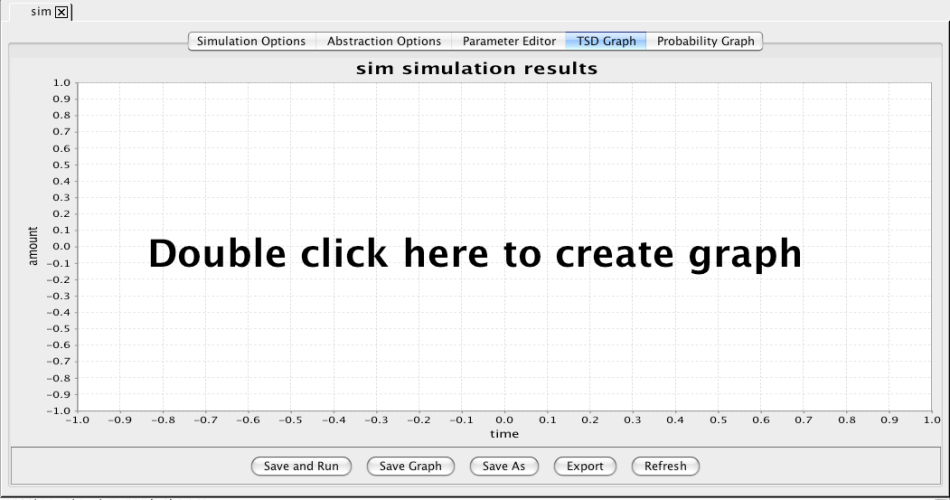

The example described in this tutorial constructs a simple model for
the cI and cII genes and the PR and PRE
promoters from the phage λ decsion circuit. This example
illustrates many of the features of iBioSim.
After starting iBioSim, complete the following steps to create
an SBML model for this example:
Select File → New → Project.
Browse to desired path and create a project named demo.
Select File → New → SBML Model.
Enter lambda as the SBML model ID at which point an SBML
editor will open.
Select Edit Compartment and change ID from default
to Cytoplasm. Also, change Units to volume.
Select Add Species and enter CI as the ID,
The lambda repressor as the name, and change the units
to mole. Select Add Species again and enter CI2 as the ID,
CI dimer as the name, and change the units to mole.
Select Add Parameter and enter nd as the ID,
Number of molecules in dimer as the name, and change the
units to dimensionless.
Select Definitions/Types tab, and select Add Unit
and enter per_second as the ID. Select Add to List,
select second as the kind, change the exponent to −1,
and click Add. Click Add in the Unit Definition Editor.
Repeat these steps to create a per_second_mole unit
(i.e., (second)−1(mole)−1).
Select Main Elements tab. Select Add Reaction and
enter Dimerize_CI as the ID, Reaction to dimerize CI as
the name, and change reversible to true.
Select Add Reactant and select CI as the species,
Stoichiometry to Stoichiometry math, and set its
value to nd.
Select Add Product and select CI2 as the species.
Leave the stoichiometry as 1.
Highlight kf and select Edit Selected Parameter, change
kf to k2f, and change the units to per_second_mole.
Highlight kr and select Edit Selected Parameter, change
kr to k2r, and change the units to per_second.
Select Use Mass Action, select Add,
and select Save and Check SBML. There should be no errors.
Add a new species "CI_total" with units of mole.
Click on the "Initial Assignments/Rules/Constraints/Events" tab
and press the "Add Rule" button.
Select Assignment Type, select Variable "CI_total",
and enter the following as the Rule:
2 * CI2 + CI
Highlight lambda.sbml, using right mouse button, select
View Network.
Highlight lambda.sbml, using right mouse button, select
View in Browser.
Go back to the SBML editor complete the construction of the
chemical reaction network shown below:
PRE + RNAP
KPRE2 ↔
PRE_RNAP
PRE + CII + RNAP
KPRE4 ↔
PRE_CII_RNAP
PRE_RNAP
kPREb →
PRE_RNAP + nCI
PRE_CII_RNAP
kPRE →
PRE_CII_RNAP + nCI
PR + RNAP
KOR9 ↔
PR_RNAP
PR + 2 CI2
KOR10 ↔
PR_2 CI2
PR_RNAP
kPR →
PR_RNAP + nCII
2 CI
K2 ↔
CI2
CI
k1 →
()
CII
k10 →
()
Constant
Value
Constant
Value
Constant
Value
Constant
Value
KPRE2
0.01 M−1
KPRE4
0.00161 M−2
kPREb
0.00004 sec−1
kPRE
0.015 sec−1
n
10
KOR9
0.69422 M−1
KOR10
0.06568 M−2
kPR
0.014 sec−1
K2
0.1 M−1
k1
0.0007 sec−1
k10
0.002 sec−1
Set an initial amount of 1.0 for PRE and OR, 30.0 for RNAP, and 0.0
for the rest.
The following instructions describe how to analyze the SBML file just
created.
Highlight lambda.sbml, using the right mouse button, select
Create Analysis View, and enter the name sim.
In the newly opened window, select Monte Carlo.
Also, in this window, change the time limit to 2100.0, print interval
to 100.0, and runs to 20.
Finally, select Save and Run at the bottom of the window.
After the simulation completes (it may take a little while), click on
the graph tab.

Click on the graph to bring up the graph editor. Highlight Average,
if not already highlighted, select CI2 and CII, change Title to
"Average", change X-Axis Label to "Time (seconds)", and change
Y-Axis Label to "Number of Molecules". Press the OK button.
Click on Export and enter file name of average.jpg.
Repeat these steps to generate graphs for the standard deviation
stddev.jpg and run-1 run1.jpg.
Note that you can use the "Deselect All" button to
remove all items from the graph.
Click on the SBML editor tab. Change the initial amounts of OR and
PRE to 10. Press the Save and Run button.
Click on the graph tab and following the steps above, create the
following plots average_10.jpg, run1_10.jpg, and
stddev_10.jpg.
Simulate your lambda model with BioSim using the ODE method rkf45 with
a time limit of 2100 and print interval of 50.
Make a note of the simulation time and plot CI2 and CII.
Next, simulate using the Euler method. Make a note of the simulation time
and add CI2 and CII from the euler results to your graph.
How do the simulation times and results compare?
Change the time step and rerun the Euler method. Repeat until the results
match up well. What time step is required for a good match?
How do the simulation times compare?
The example in this section illustrates abstraction-based synthesis.
Press the Save SBML button.
Create or open an analysis view on your lambda model.
Select "None" and "Network", and press the Save and Run button.
Count the number of species and reactions in your model.
Select "Monte Carlo", set the Time Limit to 2100.0, Print Interval to
100.0, and Runs to 20. Press the Save and Run button and record the
simulation time.
Create a new analysis view for your lambda model and
select "Abstraction" this time.
In the abstraction tab, change rapid equilibrium conditions 1 and 2
to 1000.0 as well as QSSA condition to 1000.0. Select "Network" then
save and run. Count the number of species and reactions in your model.
Select "Monte Carlo", set the Time Limit to 2100.0, Print Interval to
100.0, and Runs to 20. Press the Save and Run button and record the
simulation time.
Select File → New → Graph and enter a name for
your new top-level graph.
Click on the graph and find the average simulation results from your
orginal model and graph CII and CIt. Also, add to this graph from
your abstracted model CII and CI. How well do they compare?
Send me by email a jpg of your result.
Go back to your analysis view in which you did abstraction and change
all the conditions back to 0.1. Regenerate the network and record the
number of species and reactions. Regenerate the simulation results and
record the simulation time.
Go back to the top-level graph which should have updated results.
How does it compare now?
This section gives an example using the GCM editor.
Create a new project named "xor",
select File → New → Genetic Circuit Model,
and enter the name xor.
Add species A and B of type constant. Be sure to fill in both
the ID and Name fields.
Add species Abar, Bbar, X, Y, and C of type normal. Again,
fill in the ID and Name fields.
Add an influence of type repression with input A and output Abar and
dimer of 2. You have just created an inverter.
Create another inverter from B to Bbar.
Add a promoter named PX1 and another promoter named PX2.
Add a repression influence from A to X and use the promoter
PX1 with dimer of 2.
Add a repression influence from Bbar to X and use the promoter
PX2 with dimer of 2. You have just created a NAND gate.
Create another NAND gate with inputs Abar and B and output Y.
Finally, create another NAND gate with inputs X and Y and
output C.
Change the decay parameter to 0.01.
Press the "Save GCM" and "Save as SBML" buttons.
Create an analysis view for your xor.sbml file.
Select the User Defined Data tab and click on the
"Use User Defined Data" button.
Add a data point for A at time step 1000 to go to 20.
Add a data point for B at time step 2000 to go to 20.
Add a data point for A at time step 3000 to go to 0.
Add a data point for B at time step 4000 to go to 0.
Select the options tab, select "abstraction", and
set a time limit of 5000, a print interval of 200, and 20 runs.
Select the abstraction tab, and add species C to the interesting
species list.
Press the "Save Parameters" button then "Save and Run" button.
Create a graph that includes A, B, and C. Email a jpg
of this graph to me.
Close your analysis view and edit your xor.gcm. Try adjusting
some of the global parameters. Remember to save both your gcmsbml files. Reopen your analysis view and re-run your simulation.
Send me a few different graphs. Change the titles of the graphs
and provide a description in your email of the graphs as to what you
changed.
File translated from
TEX
by
TTH,
version 3.81. On 12 Aug 2008, 14:10.